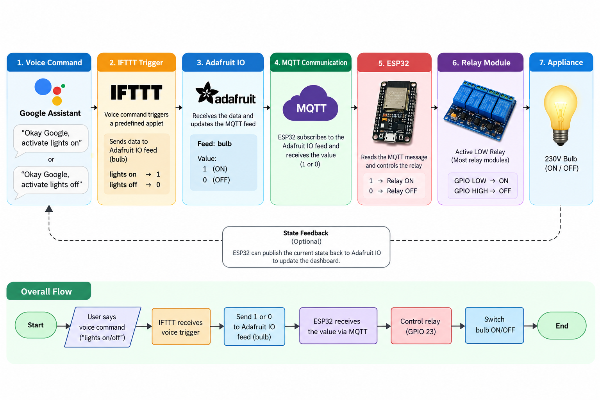
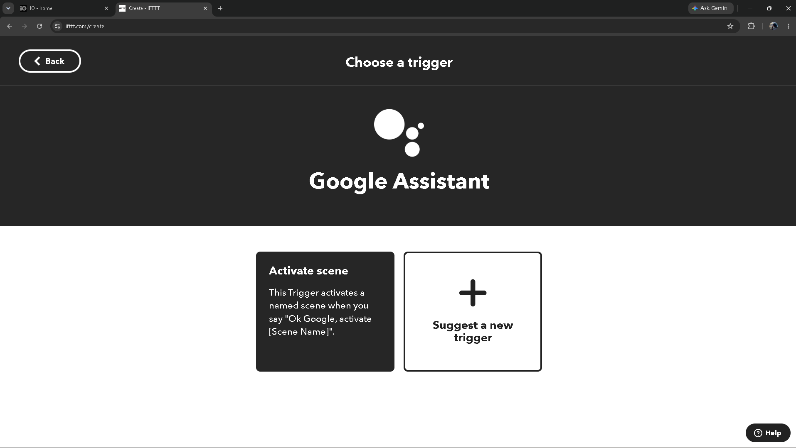

IoT Session
Project 3
Voice-triggered appliance control
TASK 03 / VOICE-CONTROLLED IoT
I developed a voice-controlled appliance system where spoken commands are handled by a cloud device service and translated into relay-controlled switching by the ESP32.
IoT Session
Voice-triggered appliance control
Firmware Architecture
Secure WebSocket control to the ESP32
Actuator
Active-LOW relay switching
Project 3 / Main Highlight
I developed a voice-controlled IoT system where a spoken command becomes an appliance control action. The voice interface connects through a cloud device service to the ESP32 and a physical relay-controlled load.
The project materials also document an automation route that passes a voice action through IFTTT and an Adafruit IO feed using MQTT.
The supplied firmware uses SinricPro directly. In this architecture, SinricPro delivers events to the ESP32 over a secure WebSocket connection; it is separate from the IFTTT and MQTT path shown beside it.

Hardware Setup
The firmware also uses the ESP32 onboard LED on GPIO 2 as a status indicator.

IFTTT Configuration
These screenshots document the IFTTT applet, its web request configuration, and an OFF command in the separate IFTTT-to-Adafruit IO workflow.


Adafruit IO
In the IFTTT workflow, Adafruit IO provides the cloud feed endpoint. MQTT carries the feed update toward the subscribed device. This documents a distinct route from the SinricPro firmware architecture.

Voice Trigger
"Okay Google, activate lights on" "Okay Google, activate lights off"
The configured voice command starts the selected cloud automation or device-service route, which ultimately requests a change to the ESP32-controlled relay state.

Firmware
The supplied firmware connects the ESP32 to Wi-Fi and SinricPro, registers a switch power-state callback, and calls SinricPro.handle() continuously. The callback drives GPIO 23 LOW for relay ON and HIGH for relay OFF. Credentials below are placeholders.
#include <WiFi.h>
#include <SinricPro.h>
#include <SinricProSwitch.h>
const char* WIFI_SSID = "YOUR_WIFI_SSID";
const char* WIFI_PASS = "YOUR_WIFI_PASSWORD";
const char* APP_KEY = "YOUR_SINRICPRO_APP_KEY";
const char* APP_SECRET = "YOUR_SINRICPRO_APP_SECRET";
const char* DEVICE_ID_FAN = "YOUR_DEVICE_ID_FOR_FAN";
const int RELAY_PIN_FAN = 23;
const int STATUS_LED_PIN = 2;
const int RELAY_ON = LOW;
const int RELAY_OFF = HIGH;
bool onPowerState(const String &deviceId, bool &state)
{
Serial.println();
Serial.println("======================================");
Serial.println("Voice Command Received");
Serial.println("======================================");
Serial.print("Device ID: ");
Serial.println(deviceId);
Serial.print("Requested State: ");
if (state)
{
Serial.println("ON");
digitalWrite(RELAY_PIN_FAN, RELAY_ON);
digitalWrite(STATUS_LED_PIN, HIGH);
Serial.println("Relay: ON");
Serial.println("Appliance: ON");
}
else
{
Serial.println("OFF");
digitalWrite(RELAY_PIN_FAN, RELAY_OFF);
digitalWrite(STATUS_LED_PIN, LOW);
Serial.println("Relay: OFF");
Serial.println("Appliance: OFF");
}
Serial.println("======================================");
return true;
}
void connectWiFi()
{
Serial.println();
Serial.println("Connecting to Wi-Fi...");
WiFi.begin(WIFI_SSID, WIFI_PASS);
while (WiFi.status() != WL_CONNECTED)
{
delay(500);
Serial.print(".");
}
Serial.println();
Serial.println("Wi-Fi Connected!");
Serial.print("IP Address: ");
Serial.println(WiFi.localIP());
Serial.print("Signal Strength: ");
Serial.print(WiFi.RSSI());
Serial.println(" dBm");
}
void setupSinricPro()
{
SinricProSwitch &mySwitch = SinricPro[DEVICE_ID_FAN];
mySwitch.onPowerState(onPowerState);
SinricPro.begin(APP_KEY, APP_SECRET);
Serial.println();
Serial.println("SinricPro initialized.");
Serial.println("Cloud voice interface is active.");
}
void setup()
{
Serial.begin(115200);
delay(1000);
Serial.println();
Serial.println("======================================");
Serial.println(" ESP32 VOICE CONTROLLED APPLIANCE");
Serial.println("======================================");
digitalWrite(RELAY_PIN_FAN, RELAY_OFF);
pinMode(RELAY_PIN_FAN, OUTPUT);
digitalWrite(RELAY_PIN_FAN, RELAY_OFF);
pinMode(STATUS_LED_PIN, OUTPUT);
digitalWrite(STATUS_LED_PIN, LOW);
Serial.println("Relay initialized: OFF");
Serial.println("Status LED initialized: OFF");
connectWiFi();
setupSinricPro();
Serial.println();
Serial.println("======================================");
Serial.println("System Ready");
Serial.println("======================================");
}
void loop()
{
SinricPro.handle();
if (WiFi.status() != WL_CONNECTED)
{
Serial.println("Wi-Fi connection lost.");
connectWiFi();
}
delay(10);
}onPowerState(const String &deviceId, bool &state) receives the requested switch state. It updates relay GPIO 23 and the onboard status LED, then returns true to report the command handled.
SinricPro.handle() processes cloud events in the main loop.Testing & Debugging

Results
Key Technical Points
What I Learned
Reflection
Project Outcome
Video Demonstration
This demonstration shows the voice-controlled appliance workflow, including the voice trigger, cloud communication, ESP32 response, relay switching, and appliance control.